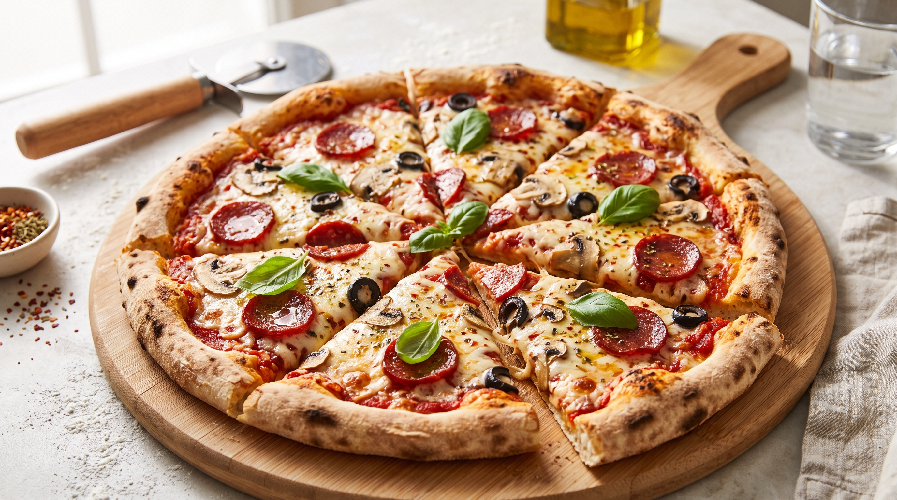

Pizza

Description
This classic homemade pizza features a crispy outer crust, a rich tomato sauce base,
melted mozzarella cheese, and fresh basil leaves. It brings the authentic taste
of an Italian pizzeria right into your home kitchen.
Perfect for family movie nights or weekend gatherings, this recipe is completely
customizable with your favorite toppings. It is easy to assemble and bakes into a delicious,
golden perfection in just a few minutes!
Ingredients
- 2 1/2 cups all-purpose flour
- 1 packet (7g) active dry yeast
- 1 cup warm water
- 1 tablespoon olive oil
- 1 teaspoon sugar
- 1 teaspoon salt
- 1/2 cup pizza sauce
- 1 1/2 cups mozzarella cheese, shredded
- Fresh basil leaves or oregano
- Your choice of additional toppings (pepperoni, mushrooms, peppers)
Steps
- In a bowl, combine warm water, sugar, and yeast. Let sit for 5 minutes until frothy.
- Add flour, olive oil, and salt. Mix until a dough forms, then knead on a floured surface for 5 minutes until smooth.
- Cover the dough with a towel and let it rise in a warm spot for about 30 to 45 minutes until doubled in size.
- Preheat your oven to 475°F (245°C) and lightly grease a pizza pan or baking sheet.
- Roll or stretch the dough into a circle on the prepared pan.
- Spread the pizza sauce evenly over the dough, leaving a small border for the crust.
- Top with shredded mozzarella cheese and your favorite toppings.
- Bake for 12 to 15 minutes until the crust is golden brown and the cheese is melted and bubbly.
- Let it cool for 2 minutes, then slice and serve hot.
Home